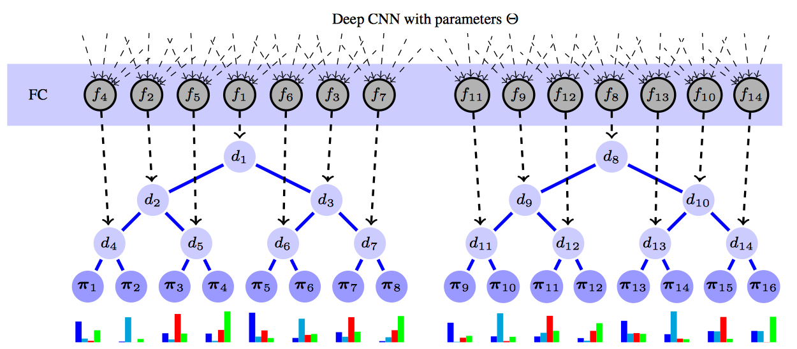

Deep Neural Decision Forests
Updated:
The Deep Neural Decision Forests(dNDF) attempts to combine the Neural Network and the Random Forests. The motivations are 1) the Neural Network is good at learning feature representations 2) the Random Forests is handy at dealing with dimensional data and is explainable (a fact is that the RF is very popular in data competitions). The approach is to integrate the Neural Network as split functions or routing decisions. Also, the decision trees are stochastic, differentiable, and therefore backpropagation compatible. I implemented the Deep Neural Decision Forests in PyTorch. The project has been pushed to Github link.
Decision Trees with Stochastic Routing
The decision tree used here is a full binary tree. A decision tree consists of decision (or split) nodes and prediction (or leaf) nodes. As described above, the decision to go right or left is determined by the Neural Network. Let us denote all parameters of the Neural Network with $\Theta$. Every tree picks a part of the output of the Neural Network, maps the output to each decision nodes which give the probability of traversing right or left subtree. Every prediction node contains class-label distribution $\pi$. Since the routing is probabilistic which is different from normal decision tree, the prediction of each tree is given by averaging all class-label distributions of prediction nodes by the probability of arriving leaf. The architecture as below indicates the RF contains two decision trees. The RF’s prediction is obtained by averaging the prediction of decision trees.

Training
The parameters needed to be learned is $\Theta$ and $\pi$. If the $\pi$ is known and fixed, we can train the model like it was a normal neural network model using backpropagation. The object function can be a negative loglikelihood function which we want to minimize
$$
L = \sum -\log (P(y|x,\Theta,\pi))
$$
But the $\pi$ is actually a pamameter. They propose to learn $\pi$ using following method for each tree
$$
\pi^{(t+1)}_{ly} = \frac{1}{Z^{(t)}_{l}} \sum_{(x,y^{‘}) \in D } \frac{1_{y=y^{‘}} \pi^{(t)}_{ly} \mu_{l}(x|\Theta)}{P(y|x,\Theta,\pi^{(t)})}
$$
where $t$ is the iteration $t$, $l$ is the leaf $l$, $\pi_{ly}$ means the probability of class $y$ in leaf $l$, $\mu_{l}(x|\Theta)$ means the probability of arriving leaf $l$ giving example $x$, ${P(y|x,\Theta,\pi^{(t)})}$ means the probability of class $y$ giving example $x$, $(x,y^{‘})$ belongs to training dataset and ${Z^{(t)}_{l}}$ is a normalizing factor at iteration $t$.
So the training strategy is to firstly update $\pi$ by the equation above with $\Theta$ fixed and then update $\Theta$ by optimizing the object function with $\pi$ fixed.
sNDF and dNDF
The major difference between sNDF and dNDF is that in sNDF there are no hidden layers in the neural network as indicated by the name Shallow Neural Decision Forests.
Results of My Implementation
Below are the accuracy results of my implementation on MNIST, UCI_Adult, UCI_Letter and UCI_Yeast dataset.
| Dataset | sNDF | dNDF |
|---|---|---|
| MNIST | 0.9794 | 0.9963 |
| UCI_Adult | 0.8558 | - |
| UCI_Letter | 0.9507 | - |
| UCI_Yeast | 0.6031 | - |